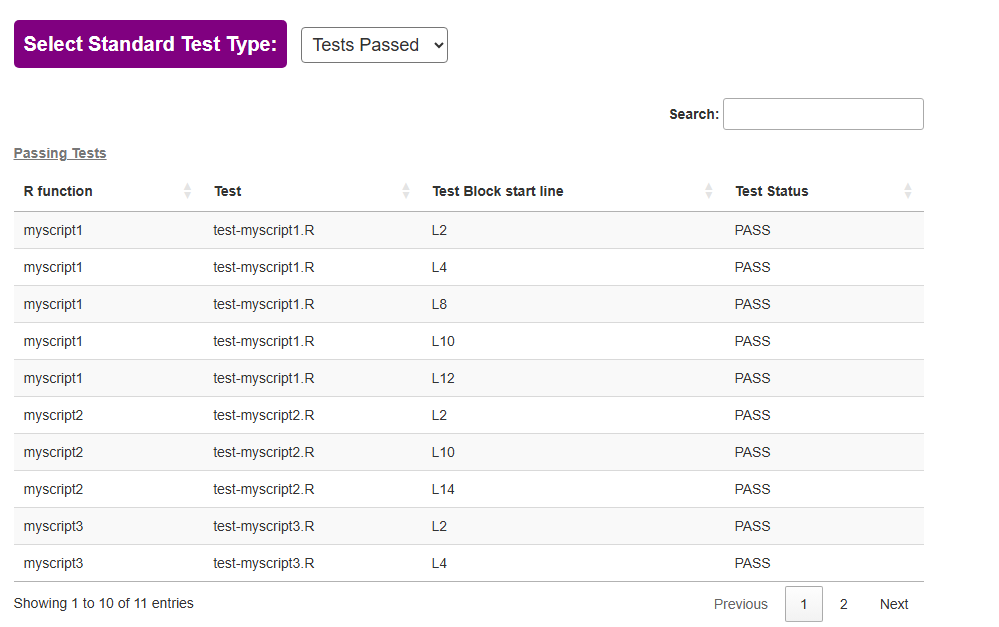
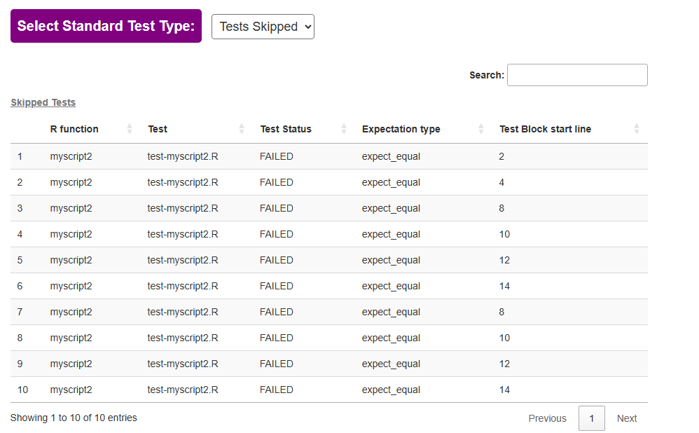
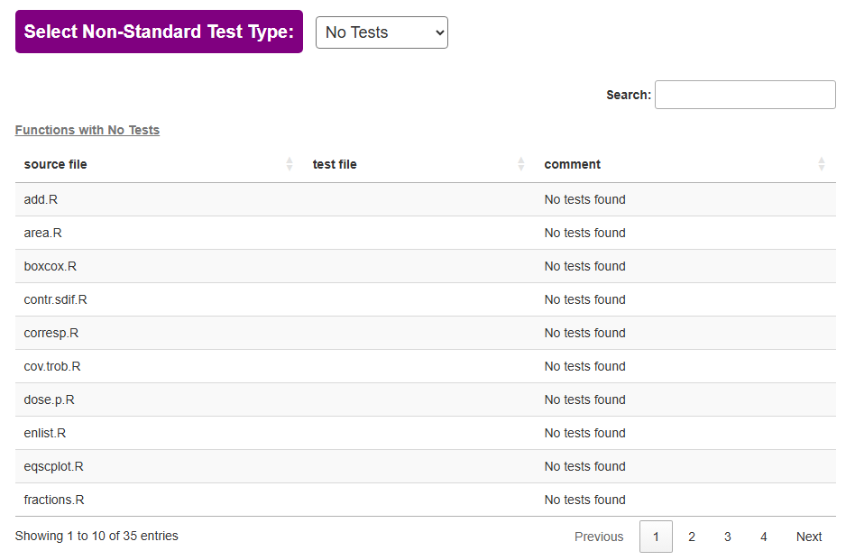
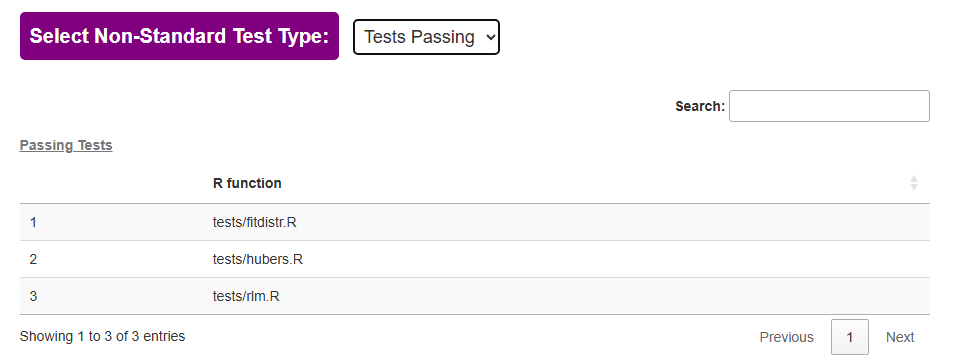
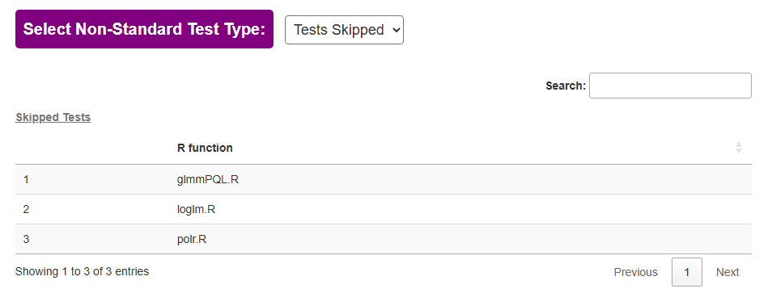

Overview
test.assessr helps in the assessment of a package’s test reliability and validity.
It calculates unit test coverage for packages with standard testing frameworks and non-standard testing frameworks, including Bioconductor packages.
Description
This package executes the following tasks:
upload the source package(
tar.gzfile)Unpack the
tar.gzfileInstall the package locally
Run code coverage
Package Installation
from Github
-
Create a
Personal Access Token(PAT) ongithub- Log into your
githubaccount - Go to the token settings URL using the Token Settings URL
- (do not forget to add the SSH
GitHubauthorization)
- (do not forget to add the SSH
- Log into your
Create a
.Renvironfile with your GITHUBTOKEN as:
# .Renviron
GITHUBTOKEN=dfdxxxxxxxxxxxxxxxxxxxxxxxxxxxxxxxxxxxfdf- restart R session
- You can install the package with:
auth_token = Sys.getenv("GITHUBTOKEN")
devtools::install_github("pharmaverse/test.assessr", ref = "main", auth_token = auth_token)Usage
Assessing your own package for test coverage
To assess your package’s test coverage, do the following steps:
1 - save your package as a tar.gz file
- This can be done in
RStudio->Build Tab->More->Build Source Package
2 - Run the following code sample by loading or add path parameter to your tar.gz package source code
# for local tar.gz R package
dp <- (path/to/your/package)
test_package_coverage <- get_package_coverage(dp)
generate_test_report(test_package_coverage)
test.assessr results
For a package with a standard testing framework such as testthat or testit or non-standard testing frameworks such as BiocGenerics and RUnit, test_assessr can provide data on which tests are passing and which tests are skipped.
The standard testing framework test report tells you which tests have passed:

The report provides information on which test blocks have passed and the start line of each test block.
The standard testing framework test report tells you which tests have been skipped:

The report provides information on which test blocks have passed, expectation type, and the start line of each test block.
The non-standard testing framework test report tells you which functions have no tests:

The report tells you which tests have passed:

The test report tells you which tests have been skipped:

Current/Future directions
- to develop methods for checking the validity of test data
- to develop methods of checking mocks
Acknowledgements
The project is inspired by the covrpage and mpn.scorecard packages and draws on some of their ideas and functions.